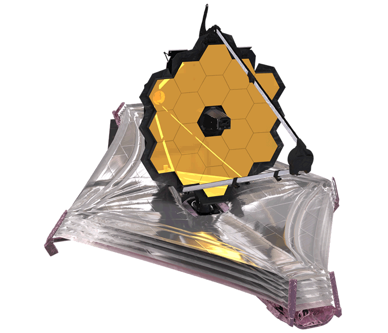
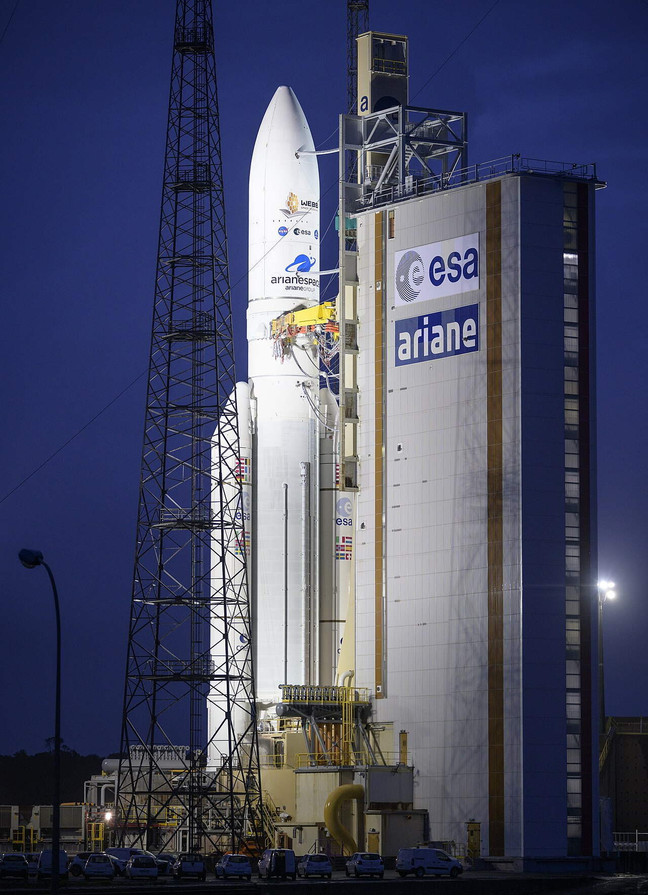

Nasa's James Webb Space Telescope

Table of Contents
The James Webb Space Telescope (JWST) is a space telescope designed to conduct infrared astronomy. Its high-resolution and high-sensitivity instruments allow it to view objects too old, distant, or faint for the Hubble Space Telescope.[9] This enables investigations across many fields of astronomy and cosmology, such as observation of the first stars and the formation of the first galaxies, and detailed atmospheric characterization of potentially habitable exoplanets.[10][11][12]
The Webb was launched on 25 December 2021 on an Ariane 5 rocket from Kourou, French Guiana. In January 2022 it arrived at its destination, a solar orbit near the Sun–Earth L2 Lagrange point, about 1.5 million kilometers (930,000 mi) from Earth. The telescope's first image was released to the public on 11 July 2022.[13]
The U.S. National Aeronautics and Space Administration (NASA) led Webb's design and development and partnered with two main agencies: the European Space Agency (ESA) and the Canadian Space Agency (CSA). The NASA Goddard Space Flight Center (GSFC) in Maryland managed telescope development, while the Space Telescope Science Institute in Baltimore on the Homewood Campus of Johns Hopkins University operates Webb. The primary contractor for the project was Northrop Grumman.
The telescope is named after James E. Webb, who was the administrator of NASA from 1961 to 1968 during the Mercury, Gemini, and Apollo programs.
Webb's primary mirror consists of 18 hexagonal mirror segments made of gold-plated beryllium, which together create a 6.5-meter-diameter (21 ft) mirror, compared with Hubble's 2.4 m (7 ft 10 in). This gives Webb a light-collecting area of about 25 square meters, about six times that of Hubble. Unlike Hubble, which observes in the near ultraviolet and visible (0.1 to 0.8 μm), and near infrared (0.8–2.5 μm)[14] spectra, Webb observes a lower frequency range, from long-wavelength visible light (red) through mid-infrared (0.6–28.3 μm). The telescope must be kept extremely cold, below 50 K (−223 °C; −370 °F), so that the infrared light emitted by the telescope itself does not interfere with the collected light. Its five-layer sunshield protects it from warming by the Sun, Earth, and Moon.
Initial designs for the telescope, then named the Next Generation Space Telescope, began in 1996. Two concept studies were commissioned in 1999, for a potential launch in 2007 and a US$1 billion budget. The program was plagued with enormous cost overruns and delays. A major redesign was accomplished in 2005, with construction completed in 2016, followed by years of exhaustive testing, at a total cost of US$10 billion.
Features
The mass of the James Webb Space Telescope is about half that of the Hubble Space Telescope. Webb has a 6.5 m (21 ft)-diameter gold-coated beryllium primary mirror made up of 18 separate hexagonal mirrors. The mirror has a polished area of 26.3 m2 (283 sq ft), of which 0.9 m2 (9.7 sq ft) is obscured by the secondary support struts,[15] giving a total collecting area of 25.4 m2 (273 sq ft). This is over six times larger than the collecting area of Hubble's 2.4 m (7.9 ft) diameter mirror, which has a collecting area of 4.0 m2 (43 sq ft). The mirror has a gold coating to provide infrared reflectivity and this is covered by a thin layer of glass for durability.[16]
Webb is designed primarily for near-infrared astronomy, but can also see orange and red visible light, as well as the mid-infrared region, depending on the instrument being used.[10][11] It can detect objects up to 100 times fainter than Hubble can, and objects much earlier in the history of the universe, back to redshift z≈20 (about 180 million years cosmic time after the Big Bang).[17] For comparison, the earliest stars are thought to have formed between z≈30 and z≈20 (100–180 million years cosmic time),[18] and the first galaxies may have formed around redshift z≈15 (about 270 million years cosmic time). Hubble is unable to see further back than very early reionization[19][20] at about z≈11.1 (galaxy GN-z11, 400 million years cosmic time).[21][22][17]
The design emphasizes the near to mid-infrared for several reasons:
high-redshift (very early and distant) objects have their visible emissions shifted into the infrared, and therefore their light can be observed only via infrared astronomy;[14]
infrared light passes more easily through dust clouds than visible light;[14]
colder objects such as debris disks and planets emit most strongly in the infrared;
these infrared bands are difficult to study from the ground or by existing space telescopes such as Hubble.
Ground-based telescopes must look through Earth's atmosphere, which is opaque in many infrared bands (see figure at right). Even where the atmosphere is transparent, many of the target chemical compounds, such as water, carbon dioxide, and methane, also exist in the Earth's atmosphere, vastly complicating analysis. Existing space telescopes such as Hubble cannot study these bands since their mirrors are insufficiently cool (the Hubble mirror is maintained at about 15 °C [288 K; 59 °F]) which means that the telescope itself radiates strongly in the relevant infrared bands.[23]
Webb can also observe objects in the Solar System at an angle of more than 85° from the Sun and having an apparent angular rate of motion less than 0.03 arc seconds per second.[a] This includes Mars, Jupiter, Saturn, Uranus, Neptune, Pluto, their satellites, and comets, asteroids and minor planets at or beyond the orbit of Mars. Webb has the near-IR and mid-IR sensitivity to be able to observe virtually all known Kuiper Belt Objects.[18][27] In addition, it can observe opportunistic and unplanned targets within 48 hours of a decision to do so, such as supernovae and gamma ray bursts.[18]
Location and Orbit
Webb operates in a halo orbit, circling around a point in space known as the Sun–Earth L2 Lagrange point, approximately 1,500,000 km (930,000 mi) beyond Earth's orbit around the Sun. Its actual position varies between about 250,000 and 832,000 km (155,000–517,000 mi) from L2 as it orbits, keeping it out of both Earth and Moon's shadow. By way of comparison, Hubble orbits 550 km (340 mi) above Earth's surface, and the Moon is roughly 400,000 km (250,000 mi) from Earth. Objects near this Sun–Earth L2 point can orbit the Sun in synchrony with the Earth, allowing the telescope to remain at a roughly constant distance[28] with continuous orientation of its sunshield and equipment bus toward the Sun, Earth and Moon. Combined with its wide shadow-avoiding orbit, the telescope can simultaneously block incoming heat and light from all three of these bodies and avoid even the smallest changes of temperature from Earth and Moon shadows that would affect the structure, yet still maintain uninterrupted solar power and Earth communications on its sun-facing side. This arrangement keeps the temperature of the spacecraft constant and below the 50 K (−223 °C; −370 °F) necessary for faint infrared observations.[29][30]
Sunshield Protection
To make observations in the infrared spectrum, Webb must be kept under 50 K (−223.2 °C; −369.7 °F); otherwise, infrared radiation from the telescope itself would overwhelm its instruments. Its large sunshield blocks light and heat from the Sun, Earth, and Moon, and its position near the Sun–Earth L2 keeps all three bodies on the same side of the spacecraft at all times.[31] Its halo orbit around the L2 point avoids the shadow of the Earth and Moon, maintaining a constant environment for the sunshield and solar arrays.[28] The resulting stable temperature for the structures on the dark side is critical to maintaining precise alignment of the primary mirror segments.[29]
The five-layer sunshield, each layer as thin as a human hair,[32] is made of Kapton E film, coated with aluminum on both sides and a layer of doped silicon on the Sun-facing side of the two hottest layers to reflect the Sun's heat back into space.[29] Accidental tears of the delicate film structure during deployment testing in 2018 led to further delays to the telescope deployment.[33]
The sunshield was designed to be folded twelve times so that it would fit within the Ariane 5 rocket's payload fairing, which is 4.57 m (15.0 ft) in diameter, and 16.19 m (53.1 ft) long. The shield's fully deployed dimensions were planned as 14.162 m × 21.197 m (46.46 ft × 69.54 ft).[34]
Keeping within the shadow of the sunshield limits the field of regard of Webb at any given time. The telescope can see 40 percent of the sky from any one position, but can see all of the sky over a period of six months.[35]
Optics
Webb's primary mirror is a 6.5 m (21 ft)-diameter gold-coated beryllium reflector with a collecting area of 25.4 m2 (273 sq ft). If it had been designed as a single, large mirror, it would have been too large for existing launch vehicles. The mirror is therefore composed of 18 hexagonal segments (a technique pioneered by Guido Horn d'Arturo), which unfolded after the telescope was launched. Image plane wavefront sensing through phase retrieval is used to position the mirror segments in the correct location using precise actuators. Subsequent to this initial configuration, they only need occasional updates every few days to retain optimal focus.[36] This is unlike terrestrial telescopes, for example the Keck telescopes, which continually adjust their mirror segments using active optics to overcome the effects of gravitational and wind loading.[37] The Webb telescope uses 132 small actuation motors to position and adjust the optics.[38] The actuators can position the mirror with 10 nanometer accuracy.[39]
Webb's optical design is a three-mirror anastigmat,[40] which makes use of curved secondary and tertiary mirrors to deliver images that are free from optical aberrations over a wide field. The secondary mirror is 0.74 m (2.4 ft) in diameter. In addition, there is a fine steering mirror which can adjust its position many times per second to provide image stabilization. Photographs taken by Webb have six spikes plus two fainter ones due to the spider supporting the secondary mirror.[41]
Scientific Instruments
The Integrated Science Instrument Module (ISIM) is a framework that provides electrical power, computing resources, cooling capability as well as structural stability to the Webb telescope. It is made with bonded graphite-epoxy composite attached to the underside of Webb's telescope structure. The ISIM holds the four science instruments and a guide camera.[42]
-
NIRCam (Near Infrared Camera) is an infrared imager which has spectral coverage ranging from the edge of the visible (0.6 μm) through to the near infrared (5 μm).[43][44] There are 10 sensors each of 4 megapixels. NIRCam serves as the observatory's wavefront sensor, which is required for wavefront sensing and control activities, used to align and focus the main mirror segments. NIRCam was built by a team led by the University of Arizona, with principal investigator Marcia J. Rieke.[45]
-
MIRI (Mid-Infrared Instrument) measures the mid-to-long-infrared wavelength range from 5 to 27 μm.[47][48] It contains both a mid-infrared camera and an imaging spectrometer.[49] MIRI was developed as a collaboration between NASA and a consortium of European countries, and is led by George Rieke (University of Arizona) and Gillian Wright (UK Astronomy Technology Centre, Edinburgh, Scotland).[45] The temperature of the MIRI must not exceed 6 K (−267 °C; −449 °F): a helium gas mechanical cooler sited on the warm side of the environmental shield provides this cooling.[50]
-
FGS/NIRISS (Fine Guidance Sensor and Near Infrared Imager and Slitless Spectrograph), led by the Canadian Space Agency under project scientist John Hutchings (Herzberg Astronomy and Astrophysics Research Centre), is used to stabilize the line-of-sight of the observatory during science observations. Measurements by the FGS are used both to control the overall orientation of the spacecraft and to drive the fine steering mirror for image stabilization. The Canadian Space Agency also provided a Near Infrared Imager and Slitless Spectrograph (NIRISS) module for astronomical imaging and spectroscopy in the 0.8 to 5 μm wavelength range, led by principal investigator René Doyon[51] at the Université de Montréal.[45] Although they are often referred together as a unit, the NIRISS and FGS serve entirely different purposes, with one being a scientific instrument and the other being a part of the observatory's support infrastructure.[52]
NIRCam and MIRI feature starlight-blocking coronagraphs for observation of faint targets such as extrasolar planets and circumstellar disks very close to bright stars.[48]
Spacecraft Bus
The spacecraft bus is the primary support component of the James Webb Space Telescope, hosting a multitude of computing, communication, electric power, propulsion, and structural parts.[53] Along with the sunshield, it forms the spacecraft element of the space telescope.[54][55] The spacecraft bus is on the Sun-facing "warm" side of the sunshield and operates at a temperature of about 300 K (27 °C; 80 °F).[54]
The structure of the spacecraft bus has a mass of 350 kg (770 lb), and must support the 6,200 kg (13,700 lb) space telescope. It is made primarily of graphite composite material.[56] The assembly was completed in California in 2015. It was integrated with the rest of the space telescope leading to its 2021 launch. The spacecraft bus can rotate the telescope with a pointing precision of one arcsecond, and isolates vibration to two milliarcseconds.[57]
Webb has two pairs of rocket engines (one pair for redundancy) to make course corrections on the way to L2 and for station keeping – maintaining the correct position in the halo orbit. Eight smaller thrusters are used for attitude control – the correct pointing of the spacecraft.[58] The engines use hydrazine fuel (159 liters or 42 U.S. gallons at launch) and dinitrogen tetroxide as oxidizer (79.5 liters or 21.0 U.S. gallons at launch).[59]
Servicing
Webb is not intended to be serviced in space. A crewed mission to repair or upgrade the observatory, as was done for Hubble, would not be possible,[60] and according to NASA Associate Administrator Thomas Zurbuchen, despite best efforts, an uncrewed remote mission was found to be beyond available technology at the time Webb was designed.[61] During the long Webb testing period, NASA officials referred to the idea of a servicing mission, but no plans were announced.[62][63] Since the successful launch, NASA has stated that nevertheless limited accommodation was made to facilitate future servicing missions. These accommodations included precise guidance markers in the form of crosses on the surface of Webb, for use by remote servicing missions, as well as refillable fuel tanks, removable heat protectors, and accessible attachment points.[64][61]
Software
Ilana Dashevsky and Vicki Balzano write that Webb uses a modified version of JavaScript, called Nombas ScriptEase 5.00e, for its operations; it follows the ECMAScript standard and "allows for a modular design flow, where on-board scripts call lower-level scripts that are defined as functions". "The JWST science operations will be driven by ASCII (instead of binary command blocks) on-board scripts, written in a customized version of JavaScript. The script interpreter is run by the flight software, which is written in the programming language C++. The flight software operates the spacecraft and the science instruments."[65][66]
Development History
Background (Development to 2003)
Major Milestones
| Year |
Milestone |
| 1996 |
Next Generation Space Telescope project first proposed (mirror size: 8 m) |
| 2001 |
NEXUS Space Telescope, a precursor to the Next Generation Space Telescope, cancelled[73]
|
| 2002 |
Proposed project renamed James Webb Space Telescope, (mirror size reduced to 6 m)
|
| 2003 |
Northrop Grumman awarded contract to build telescope
|
| 2007 |
Memorandum of Understanding signed between NASA and ESA[74]
|
| 2010 |
Mission Critical Design Review (MCDR) passed
|
| 2011 |
Proposed cancellation
|
| 2016 |
Final assembly completed
|
| 25 December 2021 |
Launch |
Discussions of a Hubble follow-on started in the 1980s, but serious planning began in the early 1990s.[75] The Hi-Z telescope concept was developed between 1989 and 1994:[76] a fully baffled[b] 4 m (13 ft) aperture infrared telescope that would recede to an orbit at 3 Astronomical unit (AU).[77] This distant orbit would have benefited from reduced light noise from zodiacal dust.[77] Other early plans called for a NEXUS precursor telescope mission.[78][79]
Correcting the flawed optics of the Hubble Space Telescope (HST) in its first years played a significant role in the birth of Webb.[citation needed] In 1993, NASA conducted STS-61, the Space Shuttle mission that replaced HST's camera and installed a retrofit for its imaging spectrograph to compensate for the spherical aberration in its primary mirror.
The HST & Beyond Committee was formed in 1994 "to study possible missions and programs for optical-ultraviolet astronomy in space for the first decades of the 21st century."[80] Emboldened by HST's success, its 1996 report explored the concept of a larger and much colder, infrared-sensitive telescope that could reach back in cosmic time to the birth of the first galaxies. This high-priority science goal was beyond the HST's capability because, as a warm telescope, it is blinded by infrared emission from its own optical system. In addition to recommendations to extend the HST mission to 2005 and to develop technologies for finding planets around other stars, NASA embraced the chief recommendation of HST & Beyond[81] for a large, cold space telescope (radiatively cooled far below 0 °C), and began the planning process for the future Webb telescope.
Preparation for the 2000 Astronomy and Astrophysics Decadal Survey (a literature review produced by the United States National Research Council that includes identifying research priorities and making recommendations for the upcoming decade) included further development of the scientific program for what became known as the Next Generation Space Telescope,[82] and advancements in relevant technologies by NASA. As it matured, studying the birth of galaxies in the young universe, and searching for planets around other stars – the prime goals coalesced as "Origins" by HST & Beyond became prominent.
As hoped, the NGST received the highest ranking in the 2000 Decadal Survey.[83]
An administrator of NASA, Dan Goldin, coined the phrase "faster, better, cheaper", and opted for the next big paradigm shift for astronomy, namely, breaking the barrier of a single mirror. That meant going from "eliminate moving parts" to "learn to live with moving parts" (i.e. segmented optics). With the goal to reduce mass density tenfold, silicon carbide with a very thin layer of glass on top was first looked at, but beryllium was selected at the end.[75]
The mid-1990s era of "faster, better, cheaper" produced the NGST concept, with an 8 m (26 ft) aperture to be flown to L2, roughly estimated to cost US$500 million.[84] In 1997, NASA worked with the Goddard Space Flight Center,[85] Ball Aerospace & Technologies,[86] and TRW[87] to conduct technical requirement and cost studies of the three different concepts, and in 1999 selected Lockheed Martin[88] and TRW for preliminary concept studies.[89] Launch was at that time planned for 2007, but the launch date was pushed back many times (see table further down).
In 2002, the project was renamed after NASA's second administrator (1961–1968), James E. Webb (1906–1992).[90] Webb led the agency during the Apollo program and established scientific research as a core NASA activity.[91]
In 2003, NASA awarded TRW the US$824.8 million prime contract for Webb. The design called for a de-scoped 6.1 m (20 ft) primary mirror and a launch date of 2010.[92] Later that year, TRW was acquired by Northrop Grumman in a hostile bid and became Northrop Grumman Space Technology.[89]
Early Development and Replanning (2003-2007)
Development was managed by NASA's Goddard Space Flight Center in Greenbelt, Maryland, with John C. Mather as its project scientist. The primary contractor was Northrop Grumman Aerospace Systems, responsible for developing and building the spacecraft element, which included the satellite bus, sunshield, Deployable Tower Assembly (DTA) which connects the Optical Telescope Element to the spacecraft bus, and the Mid Boom Assembly (MBA) which helps to deploy the large sunshields on orbit,[93] while Ball Aerospace & Technologies was subcontracted to develop and build the OTE itself, and the Integrated Science Instrument Module (ISIM).[42]
Cost growth revealed in spring 2005 led to an August 2005 re-planning.[94] The primary technical outcomes of the re-planning were significant changes in the integration and test plans, a 22-month launch delay (from 2011 to 2013), and elimination of system-level testing for observatory modes at wavelengths shorter than 1.7 μm. Other major features of the observatory were unchanged. Following the re-planning, the project was independently reviewed in April 2006.[citation needed]
In the 2005 re-plan, the life-cycle cost of the project was estimated at US$4.5 billion. This comprised approximately US$3.5 billion for design, development, launch and commissioning, and approximately US$1.0 billion for ten years of operations.[94] The ESA agreed in 2004 to contributing about €300 million, including the launch.[95] The Canadian Space Agency pledged CA$39 million in 2007[96] and in 2012 delivered its contributions in equipment to point the telescope and detect atmospheric conditions on distant planets.[97]
Detailed Design and Construction (2007-2021)
In January 2007, nine of the ten technology development items in the project successfully passed a Non-Advocate Review.[98] These technologies were deemed sufficiently mature to retire significant risks in the project. The remaining technology development item (the MIRI cryocooler) completed its technology maturation milestone in April 2007. This technology review represented the beginning step in the process that ultimately moved the project into its detailed design phase (Phase C). By May 2007, costs were still on target.[99] In March 2008, the project successfully completed its Preliminary Design Review (PDR). In April 2008, the project passed the Non-Advocate Review. Other passed reviews include the Integrated Science Instrument Module review in March 2009, the Optical Telescope Element review completed in October 2009, and the Sunshield review completed in January 2010.[100]
In April 2010, the telescope passed the technical portion of its Mission Critical Design Review (MCDR). Passing the MCDR signified the integrated observatory can meet all science and engineering requirements for its mission.[101] The MCDR encompassed all previous design reviews. The project schedule underwent review during the months following the MCDR, in a process called the Independent Comprehensive Review Panel, which led to a re-plan of the mission aiming for a 2015 launch, but as late as 2018. By 2010, cost over-runs were impacting other projects, though Webb itself remained on schedule.[102]
By 2011, the Webb project was in the final design and fabrication phase (Phase C).
Assembly of the hexagonal segments of the primary mirror, which was done via robotic arm, began in November 2015 and was completed on 3 February 2016. The secondary mirror was installed on 3 March 2016.[103][104] Final construction of the Webb telescope was completed in November 2016, after which extensive testing procedures began.[105]
In March 2018, NASA delayed Webb's launch an additional 2 years to May 2020 after the telescope's sunshield ripped during a practice deployment and the sunshield's cables did not sufficiently tighten. In June 2018, NASA delayed the launch by an additional 10 months to March 2021, based on the assessment of the independent review board convened after the failed March 2018 test deployment.[106] The review identified that Webb launch and deployment had 344 potential single-point failures – tasks that had no alternative or means of recovery if unsuccessful, and therefore had to succeed for the telescope to work.[107] In August 2019, the mechanical integration of the telescope was completed, something that was scheduled to be done 12 years before in 2007.[108]
After construction was completed, Webb underwent final tests at Northrop Grumman's historic Space Park in Redondo Beach, California.[109] A ship carrying the telescope left California on 26 September 2021, passed through the Panama Canal, and arrived in French Guiana on 12 October 2021.[110]
_(cropped).jpg)
Cost and Schedule Issues
NASA's lifetime cost for the project is[when?] expected to be US$9.7 billion, of which US$8.8 billion was spent on spacecraft design and development and US$861 million is planned to support five years of mission operations.[111] Representatives from ESA and CSA stated their project contributions amount to approximately €700 million and CA$200 million, respectively.[112]
A study in 1984 by the Space Science Board estimated that to build a next-generation infrared observatory in orbit would cost US$4 billion (US$7B in 2006 dollars, or $10B in 2020 dollars).[72] While this came close to the final cost of Webb, the first NASA design considered in the late 1990s was more modest, aiming for a $1 billion price tag over 10 years of construction. Over time this design expanded, added funding for contingencies, and had scheduling delays.
By 2008, when the project entered preliminary design review and was formally confirmed for construction, over US$1 billion had already been spent on developing the telescope, and the total budget was estimated at about US$5 billion (equivalent to $7.49 billion in 2022).[125] In summer 2010, the mission passed its Critical Design Review (CDR) with excellent grades on all technical matters, but schedule and cost slips at that time prompted Maryland U.S. Senator Barbara Mikulski to call for external review of the project. The Independent Comprehensive Review Panel (ICRP) chaired by J. Casani (JPL) found that the earliest possible launch date was in late 2015 at an extra cost of US$1.5 billion (for a total of US$6.5 billion). They also pointed out that this would have required extra funding in FY2011 and FY2012 and that any later launch date would lead to a higher total cost.[119]
On 6 July 2011, the United States House of Representatives' appropriations committee on Commerce, Justice, and Science moved to cancel the James Webb project by proposing an FY2012 budget that removed US$1.9 billion from NASA's overall budget, of which roughly one quarter was for Webb.[126][127][128][129] US$3 billion had been spent and 75% of its hardware was in production.[130] This budget proposal was approved by subcommittee vote the following day. The committee charged that the project was "billions of dollars over budget and plagued by poor management".[126] In response, the American Astronomical Society issued a statement in support of Webb,[131] as did Senator Mikulski.[132] A number of editorials supporting Webb appeared in the international press during 2011 as well.[126][133][134] In November 2011, Congress reversed plans to cancel Webb and instead capped additional funding to complete the project at US$8 billion.[135]
While similar issues had affected other major NASA projects such as the Hubble telescope, some scientists expressed concerns about growing costs and schedule delays for the Webb telescope, worrying that its budget might be competing with those of other space science programs.[136][137] A 2010 Nature article described Webb as "the telescope that ate astronomy".[138] NASA continued to defend the budget and timeline of the program to Congress.[137][139]
In 2018, Gregory L. Robinson was appointed as the new director of the Webb program.[140] Robinson was credited with raising the program's schedule efficiency (how many measures were completed on time) from 50% to 95%.[140] For his role in improving the performance of the Webb program, Robinsons's supervisor, Thomas Zurbuchen, called him "the most effective leader of a mission I have ever seen in the history of NASA."[140] In July 2022, after Webb's commissioning process was complete and it began transmitting its first data, Robinson retired following a 33-year career at NASA.[141]
On 27 March 2018, NASA pushed back the launch to May 2020 or later,[122] with a final cost estimate to come after a new launch window was determined with the European Space Agency (ESA).[142][143][144] In 2019, its mission cost cap was increased by US$800 million.[145] After launch windows were paused in 2020 due to the COVID-19 pandemic,[146] Webb was launched at the end of 2021, with a total budget of just under US$10 billion.
| Year |
Planned Launch |
Budget Plan (billion USD) |
| 1998 |
2007 |
1 |
| 2000 |
2009 |
1.8 |
| 2002 |
2010 |
2.5 |
| 2003 |
2011 |
2.5 |
| 2005 |
2013 |
3 |
| 2006 |
2014 |
4.5 |
| 2008 |
2014 |
5.1 |
| 2010 |
2015 to 2016 |
6.5 |
| 2011 |
2018 |
8.7 |
| 2017 |
2019 |
8.8 |
| 2018 |
2020 |
>=8.8 |
| 2019 |
March 2021 |
9.66 |
| 2021 |
Dec 2021 |
9.70 |
Partnership
NASA, ESA and CSA have collaborated on the telescope since 1996. ESA's participation in construction and launch was approved by its members in 2003 and an agreement was signed between ESA and NASA in 2007. In exchange for full partnership, representation and access to the observatory for its astronomers, ESA is providing the NIRSpec instrument, the Optical Bench Assembly of the MIRI instrument, an Ariane 5 ECA launcher, and manpower to support operations.[95][147] The CSA provided the Fine Guidance Sensor and the Near-Infrared Imager Slitless Spectrograph and manpower to support operations.[148]
Several thousand scientists, engineers, and technicians spanning 15 countries have contributed to the build, test and integration of Webb.[149] A total of 258 companies, government agencies, and academic institutions participated in the pre-launch project; 142 from the United States, 104 from 12 European countries (including 21 from the U.K., 16 from France, 12 from Germany and 7 international),[150] and 12 from Canada.[149] Other countries as NASA partners, such as Australia, were involved in post-launch operation.[151]
Naming Concerns
In 2002, NASA administrator (2001–2004) Sean O'Keefe made the decision to name the telescope after James E. Webb, the administrator of NASA from 1961 to 1968 during the Mercury, Gemini, and much of the Apollo programs.[90][91]
In 2015, concerns were raised around Webb's possible role in the lavender scare, the mid-20th-century persecution by the U.S. government targeting homosexuals in federal employment.[152][153] In 2022, NASA released a report of an investigation,[154] based on an examination of more than 50,000 documents. The report found "no available evidence directly links Webb to any actions or follow-up related to the firing of individuals for their sexual orientation", either in his time in the State Department or at NASA.[155][156]
Mission Goals
The James Webb Space Telescope has four key goals:
to search for light from the first stars and galaxies that formed in the universe after the Big Bang
to study galaxy formation and evolution
to understand star formation and planet formation
to study planetary systems and the origins of life[157]
These goals can be accomplished more effectively by observation in near-infrared light rather than light in the visible part of the spectrum. For this reason, Webb's instruments will not measure visible or ultraviolet light like the Hubble Telescope, but will have a much greater capacity to perform infrared astronomy. Webb will be sensitive to a range of wavelengths from 0.6 to 28 μm (corresponding respectively to orange light and deep infrared radiation at about 100 K or −173 °C).
Webb may be used to gather information on the dimming light of star KIC 8462852, which was discovered in 2015, and has some abnormal light-curve properties.[158]
Additionally, it will be able to tell if an exoplanet has methane in its atmosphere, allowing astronomers to determine whether or not the methane is a biosignature.[159][160]
Orbit Design
Webb orbits the Sun near the second Lagrange point (L2) of the Sun–Earth system, which is 1,500,000 km (930,000 mi) farther from the Sun than the Earth's orbit, and about four times farther than the Moon's orbit. Normally an object circling the Sun farther out than Earth would take longer than one year to complete its orbit. But near the L2 point, the combined gravitational pull of the Earth and the Sun allow a spacecraft to orbit the Sun in the same time that it takes the Earth. Staying close to Earth allows data rates to be much faster for a given size of antenna.
The telescope circles about the Sun–Earth L2 point in a halo orbit, which is inclined with respect to the ecliptic, has a radius varying between about 250,000 km (160,000 mi) and 832,000 km (517,000 mi), and takes about half a year to complete.[28] Since L2 is just an equilibrium point with no gravitational pull, a halo orbit is not an orbit in the usual sense: the spacecraft is actually in orbit around the Sun, and the halo orbit can be thought of as controlled drifting to remain in the vicinity of the L2 point.[161] This requires some station-keeping: around 2.5 m/s per year[162] from the total ∆v budget of 93 m/s.[163]: 10 Two sets of thrusters constitute the observatory's propulsion system.[164] Because the thrusters are located solely on the Sun-facing side of the observatory, all station-keeping operations are designed to slightly undershoot the required amount of thrust in order to avoid pushing Webb beyond the semi-stable L2 point, a situation which would be unrecoverable. Randy Kimble, the Integration and Test Project Scientist for the James Webb Space Telescope, compared the precise station-keeping of Webb to "Sisyphus [...] rolling this rock up the gentle slope near the top of the hill – we never want it to roll over the crest and get away from him".[165]
Infraredd Astronomy
Webb is the formal successor to the Hubble Space Telescope (HST), and since its primary emphasis is on infrared astronomy, it is also a successor to the Spitzer Space Telescope. Webb will far surpass both those telescopes, being able to see many more and much older stars and galaxies.[166] Observing in the infrared spectrum is a key technique for achieving this, because of cosmological redshift, and because it better penetrates obscuring dust and gas. This allows observation of dimmer, cooler objects. Since water vapor and carbon dioxide in the Earth's atmosphere strongly absorbs most infrared, ground-based infrared astronomy is limited to narrow wavelength ranges where the atmosphere absorbs less strongly. Additionally, the atmosphere itself radiates in the infrared spectrum, often overwhelming light from the object being observed. This makes a space telescope preferable for infrared observation.[167]
The more distant an object is, the younger it appears; its light has taken longer to reach human observers. Because the universe is expanding, as the light travels it becomes red-shifted, and objects at extreme distances are therefore easier to see if viewed in the infrared.[168] Webb's infrared capabilities are expected to let it see back in time to the first galaxies forming just a few hundred million years after the Big Bang.[169]
Infrared radiation can pass more freely through regions of cosmic dust that scatter visible light. Observations in infrared allow the study of objects and regions of space which would be obscured by gas and dust in the visible spectrum,[168] such as the molecular clouds where stars are born, the circumstellar disks that give rise to planets, and the cores of active galaxies.[168]
Relatively cool objects (temperatures less than several thousand degrees) emit their radiation primarily in the infrared, as described by Planck's law. As a result, most objects that are cooler than stars are better studied in the infrared.[168] This includes the clouds of the interstellar medium, brown dwarfs, planets both in our own and other solar systems, comets, and Kuiper belt objects that will be observed with the Mid-Infrared Instrument (MIRI).[47][169]
Some of the missions in infrared astronomy that impacted Webb development were Spitzer and the Wilkinson Microwave Anisotropy Probe (WMAP).[170] Spitzer showed the importance of mid-infrared, which is helpful for tasks such as observing dust disks around stars.[170] Also, the WMAP probe showed the universe was "lit up" at redshift 17, further underscoring the importance of the mid-infrared.[170] Both these missions were launched in the early 2000s, in time to influence Webb development.[170]
Ground Support and Operations
The Space Telescope Science Institute (STScI), in Baltimore, Maryland, on the Homewood Campus of Johns Hopkins University, was selected in 2003 as the Science and Operations Center (S&OC) for Webb with an initial budget of US$162.2 million intended to support operations through the first year after launch.[171] In this capacity, STScI was to be responsible for the scientific operation of the telescope and delivery of data products to the astronomical community. Data was to be transmitted from Webb to the ground via the NASA Deep Space Network, processed and calibrated at STScI, and then distributed online to astronomers worldwide. Similar to how Hubble is operated, anyone, anywhere in the world, will be allowed to submit proposals for observations. Each year several committees of astronomers will peer review the submitted proposals to select the projects to observe in the coming year. The authors of the chosen proposals will typically have one year of private access to the new observations, after which the data will become publicly available for download by anyone from the online archive at STScI.[citation needed]
The bandwidth and digital throughput of the satellite is designed to operate at 458 gigabits of data per day for the length of the mission (equivalent to a sustained rate of 5.42 Mbps).[38] Most of the data processing on the telescope is done by conventional single-board computers.[172] The digitization of the analog data from the instruments is performed by the custom SIDECAR ASIC (System for Image Digitization, Enhancement, Control And Retrieval Application Specific Integrated Circuit). NASA stated that the SIDECAR ASIC will include all the functions of a 9.1 kg (20 lb) instrument box in a 3 cm (1.2 in) package and consume only 11 milliwatts of power.[173] Since this conversion must be done close to the detectors, on the cold side of the telescope, the low power dissipation is crucial for maintaining the low temperature required for optimal operation of Webb.[173]
The telescope is equipped with a solid-state drive (SSD) with a capacity of 68GB, used as temporary storage for data collected from its scientific instruments. By the end of the 10-year mission, the usable capacity of the drive is expected to decrease to 60GB due to the effects of radiation and read/write operations.[174]
Micrometeoroid Strike
The C3[c] mirror segment suffered a micrometeoroid strike from a large dust mote-sized particle between 23 and 25 May, the fifth and largest strike since launch, reported 8 June 2022, which required engineers to compensate for the strike using a mirror actuator.[176] Despite the strike, a NASA characterization report states "all JWST observing modes have been reviewed and confirmed to be ready for science use" as of July 10, 2022.[177]
From Launch through Commissioning
Launch
The launch (designated Ariane flight VA256) took place as scheduled at 12:20 UTC on 25 December 2021 on an Ariane 5 rocket that lifted off from the Guiana Space Centre in French Guiana.[178][179] The telescope was confirmed to be receiving power, starting a two-week deployment phase of its parts[180] and traveling to its target destination.[181][182][183] The telescope was released from the upper stage 27 minutes 7 seconds after launch, beginning a 30-day adjustment to place the telescope in a Lissajous orbit[184] around the L2 Lagrange point.
The telescope was launched with slightly less speed than needed to reach its final orbit, and slowed down as it travelled away from Earth, in order to reach L2 with only the velocity needed to enter its orbit there. The telescope reached L2 on 24 January 2022. The flight included three planned course corrections to adjust its speed and direction. This is because the observatory could recover from underthrust (going too slowly), but could not recover from overthrust (going too fast) – to protect highly temperature-sensitive instruments, the sunshield must remain between telescope and Sun, so the spacecraft could not turn around or use its thrusters to slow down.[185]
An L2 orbit is unstable, so JWST needs to use propellant to maintain its halo orbit around L2 (known as station-keeping) to prevent the telescope from drifting away from its orbital position.[186] It was designed to carry enough propellant for 10 years,[187] but the precision of the Ariane 5 launch and the first midcourse correction were credited with saving enough onboard fuel that JWST may be able to maintain its orbit for around 20 years instead.[188][189][190] Space.com called the launch "flawless".[191]

Transit and Structural Deployment
Webb was released from the rocket upper stage 27 minutes after a flawless launch.[178][193] Starting 31 minutes after launch, and continuing for about 13 days, Webb began the process of deploying its solar array, antenna, sunshield, and mirrors.[194] Nearly all deployment actions are commanded by the Space Telescope Science Institute in Baltimore, Maryland, except for two early automatic steps, solar panel unfolding and communication antenna deployment.[195][196] The mission was designed to give ground controllers flexibility to change or modify the deployment sequence in case of problems.[197]
At 7:50 p.m. EST on 25 December 2021, about 12 hours after launch, the telescope's pair of primary rockets began firing for 65 minutes to make the first of three planned mid-course corrections.[198] On day two, the high gain communication antenna deployed automatically.[197]
On 27 December 2021, at 60 hours after launch, Webb's rockets fired for nine minutes and 27 seconds to make the second of three mid-course corrections for the telescope to arrive at its L2 destination.[199] On 28 December 2021, three days after launch, mission controllers began the multi-day deployment of Webb's all-important sunshield. On 30 December 2021, controllers successfully completed two more steps in unpacking the observatory. First, commands deployed the aft "momentum flap", a device that provides balance against solar pressure on the sunshield, saving fuel by reducing the need for thruster firing to maintain Webb's orientation.[200]
On 31 December 2021, the ground team extended the two telescoping "mid booms" from the left and right sides of the observatory.[201] The left side deployed in 3 hours and 19 minutes; the right side took 3 hours and 42 minutes.[202][201] Commands to separate and tension the membranes followed between 3 and 4 January and were successful.[201] On 5 January 2022, mission control successfully deployed the telescope's secondary mirror, which locked itself into place to a tolerance of about one and a half millimeters.[203]
The last step of structural deployment was to unfold the wings of the primary mirror. Each panel consists of three primary mirror segments and had to be folded to allow the space telescope to be installed in the fairing of the Ariane rocket for the launch of the telescope. On 7 January 2022, NASA deployed and locked in place the port-side wing,[204] and on 8 January, the starboard-side mirror wing. This successfully completed the structural deployment of the observatory.[205][206][207]
On 24 January 2022, at 2:00 p.m. Eastern Standard Time,[208] nearly a month after launch, a third and final course correction took place, inserting Webb into its planned halo orbit around the Sun–Earth L2 point.[209][210]
The MIRI instrument has four observing modes—imaging, low-resolution spectroscopy, medium-resolution spectroscopy and coronagraphic imaging. “On Aug. 24, a mechanism that supports medium-resolution spectroscopy (MRS), exhibited what appears to be increased friction during setup for a science observation. This mechanism is a grating wheel that allows scientists to select between short, medium, and longer wavelengths when making observations using the MRS mode,” said NASA in a press statement.[211]
Commissioning and Testing
On 12 January 2022, while still in transit, mirror alignment began. The primary mirror segments and secondary mirror were moved away from their protective launch positions. This took about 10 days, because the 132[212] actuator motors are designed to fine-tune the mirror positions at microscopic accuracy (10 nanometer increments) and must each move over 1.2 million increments (12.5 mm) during initial alignment.[213][39]
Mirror alignment requires each of the 18 mirror segments, and the secondary mirror, to be positioned to within 50 nanometers. NASA compares the required accuracy by analogy: "If the Webb primary mirror were the size of the United States, each [mirror] segment would be the size of Texas, and the team would need to line the height of those Texas-sized segments up with each other to an accuracy of about 1.5 inches".[214]
Mirror alignment was a complex operation split into seven phases, that had been repeatedly rehearsed using a 1:6 scale model of the telescope.[214] Once the mirrors reached 120 K (−153 °C; −244 °F),[215] NIRCam targeted the 6th magnitude star HD 84406 in Ursa Major.[d][217][218] To do this, NIRCam took 1560 images of the sky and used these wide-ranging images to determine where in the sky each segment of the main mirror initially pointed.[219] At first, the individual primary mirror segments were greatly misaligned, so the image contained 18 separate, blurry, images of the star field, each containing an image of the target star. The 18 images of HD 84406 are matched to their respective mirror segments, and the 18 segments are brought into approximate alignment centered on the star ("Segment Image Identification"). Each segment was then individually corrected of its major focusing errors, using a technique called phase retrieval, resulting in 18 separate good quality images from the 18 mirror segments ("Segment Alignment"). The 18 images from each segment, were then moved so they precisely overlap to create a single image ("Image Stacking").[214]
With the mirrors positioned for almost correct images, they had to be fine tuned to their operational accuracy of 50 nanometers, less than one wavelength of the light that will be detected. A technique called dispersed fringe sensing was used to compare images from 20 pairings of mirrors, allowing most of the errors to be corrected ("Coarse Phasing"), and then introduced light defocus to each segment's image, allowing detection and correction of almost all remaining errors ("Fine Phasing"). These two processes were repeated three times, and Fine Phasing will be routinely checked throughout the telescope's operation. After three rounds of Coarse and Fine Phasing, the telescope was well aligned at one place in the NIRCam field of view. Measurements will be made at various points in the captured image, across all instruments, and corrections calculated from the detected variations in intensity, giving a well-aligned outcome across all instruments ("Telescope Alignment Over Instrument Fields of View"). Finally, a last round of Fine Phasing and checks of image quality on all instruments was performed, to ensure that any small residual errors remaining from the previous steps, were corrected ("Iterate Alignment for Final Correction"). The telescope's mirror segments were then aligned and able to capture precise focused images.[214]
In preparation for alignment, NASA announced at 19:28 UTC on 3 February 2022, that NIRCam had detected the telescope's first photons (although not yet complete images).[214][220] On 11 February 2022, NASA announced the telescope had almost completed phase 1 of alignment, with every segment of its primary mirror having located and imaged the target star HD 84406, and all segments brought into approximate alignment.[219] Phase 1 alignment was completed on 18 February 2022,[221] and a week later, phases 2 and 3 were also completed.[222] This meant the 18 segments were working in unison, however until all 7 phases are complete, the segments were still acting as 18 smaller telescopes rather than one larger one.[222] At the same time as the primary mirror was being commissioned, hundreds of other instrument commissioning and calibration tasks were also ongoing.[223]
Allocation of Observation Time
Webb observing time is allocated through a General Observers (GO) program, a Guaranteed Time Observations (GTO) program, and a Director's Discretionary Early Release Science (DD-ERS) program.[229] The GTO program provides guaranteed observing time for scientists who developed hardware and software components for the observatory. The GO program provides all astronomers the opportunity to apply for observing time and will represent the bulk of the observing time. GO programs are selected through peer review by a Time Allocation Committee (TAC), similar to the proposal review process used for the Hubble Space Telescope.
Early Release Science Program
In November 2017, the Space Telescope Science Institute announced the selection of 13 Director's Discretionary Early Release Science (DD-ERS) programs, chosen through a competitive proposal process.[230][231] The observations for these programs—Early Release Observations (ERO)[232][233] – were to be obtained during the first five months of Webb science operations after the end of the commissioning period. A total of 460 hours of observing time was awarded to these 13 programs, which span science topics including the Solar System, exoplanets, stars and star formation, nearby and distant galaxies, gravitational lenses, and quasars. These 13 ERS programs were to use a total of 242.8 hours of observing time on the telescope (not including Webb observing overheads and slew time).
General Observer Program
For GO Cycle 1 there were 6,000 hours of observation time available to allocate, and 1,173 proposals were submitted requesting a total of 24,500 hours of observation time.[247] Selection of Cycle 1 GO programs was announced on 30 March 2021, with 266 programs approved. These included 13 large programs and treasury programs producing data for public access.[248] The Cycle 2 GO program was announced on May 10, 2023.[249] Webb science observations are nominally scheduled in weekly increments. The observation plan for every week is published on Mondays by the Space Telescope Science Institute.[250]
Scientific Results
James Webb Space Telescope completed its commissioning and was ready to begin full scientific operations on 11 July 2022.[251] With some exceptions, most experiment data is kept private for one year for the exclusive use of scientists running that particular experiment, and then the raw data will be released to the public.[252]
First Full-Color Images
The first full-color images and spectroscopic data were released on 12 July 2022, which also marked the official beginning of Webb's general science operations. United States President Joe Biden revealed the first image, Webb's First Deep Field, on 11 July 2022.[255][256] Additional releases around this time include:[259][260][261]
Carina Nebula – young, star-forming region called NGC 3324 about 8500 light-years from Earth, described by NASA as "Cosmic Cliffs".
WASP-96b – including an analysis of atmosphere with evidence of water around a giant gas planet orbiting a distant star 1120 light-years from Earth.
Southern Ring Nebula – clouds of gas and dust expelled by a dying star 2500 light-years from Earth.
Stephan's Quintet – a visual display of five galaxies with colliding gas and dust clouds creating new stars; four central galaxies are 290 million light-years from Earth.
SMACS J0723.3-7327 – a galaxy cluster at redshift 0.39, with distant background galaxies whose images are distorted and magnified due to gravitational lensing by the cluster. This image has been called Webb's First Deep Field. It was later discovered that in this picture the JWST had also revealed three ancient galaxies that existed shortly after the Big Bang. Its images of these distant galaxies are views of the universe 13.1 billion years ago.[260][262][263]
On 14 July 2022, NASA presented images of Jupiter and related areas by the James Webb Space Telescope, including infrared views.[264]
In a preprint released around the same time, NASA, ESA and CSA scientists stated that "almost across the board, the science performance of JWST is better than expected". The document described a series of observations during the commissioning, when the instruments captured spectra of transiting exoplanets with a precision better than 1000 ppm per data point, and tracked moving objects with speeds up to 67 milliarcseconds/second, more than twice as fast as the requirement.[a] It also obtained the spectra of hundreds of stars simultaneously in a dense field towards the Milky Way Galactic Center. Other targets included:[25]
Moving targets: Jupiter (including rings and the moons Europa, Thebe and Metis), asteroids 2516 Roman, 118 Peitho, 6481 Tenzing, 1773 Rumpelstilz, 216 Kleopatra, 2035 Stearns, 4015 Wilson-Harrington and 2004 JX20
NIRCam grism time-series, NIRISS SOSS and NIRSpec BOTS mode: the Jupiter-sized planet HAT-P-14b
NIRISS aperture masking interferometry (AMI): A clear detection of the very low-mass companion star AB Doradus C, which had a separation of only 0.3 arcseconds to the primary. This observation was the first demonstration of AMI in space.
MIRI low-resolution spectroscopy (LRS): a hot super-Earth planet L 168-9 b (TOI-134) around a bright M-dwarf star (red dwarf star)[265]
Bright Early Galaxies
Within two weeks of the first Webb images, several preprint papers described a wide range of high redshift and very luminous (presumably large) galaxies believed to date from 235 million years (z=16.7) to 280 million years after the Big Bang, far earlier than previously known.[232][233] On 17 August 2022, NASA released a large mosaic image of 690 individual frames taken by the Near Infrared Camera (NIRCam) on Webb of numerous very early galaxies.[266][267] Some early galaxies observed by Webb like CEERS-93316, which has an estimated redshift of approximately z=16.7 corresponding to 235.8 million years after the Big Bang, are high redshift galaxy candidates.[268][269] In September 2022, primordial black holes were proposed as explaining these unexpectedly large and early galaxies.[270][271][272]
Subsequent Noteworthy Observations and Interpretations
In June 2023 detection of organic molecules 12 billion light-years away in a galaxy called SPT0418-47 using the Webb telescope was announced.[273]
On 12 July 2023, NASA celebrated the first year of operations with the release of Webb’s image of a small star-forming region in the Rho Ophiuchi cloud complex, 390 light years away.[274]
In September 2023, two astrophysicists questioned the accepted Standard Model of Cosmology, based on the latest James Webb Space Telescope studies.[275]
In December 2023, NASA released Christmas holiday-related images by JWST, including the Christmas Tree Galaxy Cluster and others.[276]
Source:
Wikipedia - James Webb Space Telescope
Ryan Venturi - Interstellar (Film)
Tessa Hammond - Saturn (Planet)
Alexis Muniz - Artemis 2